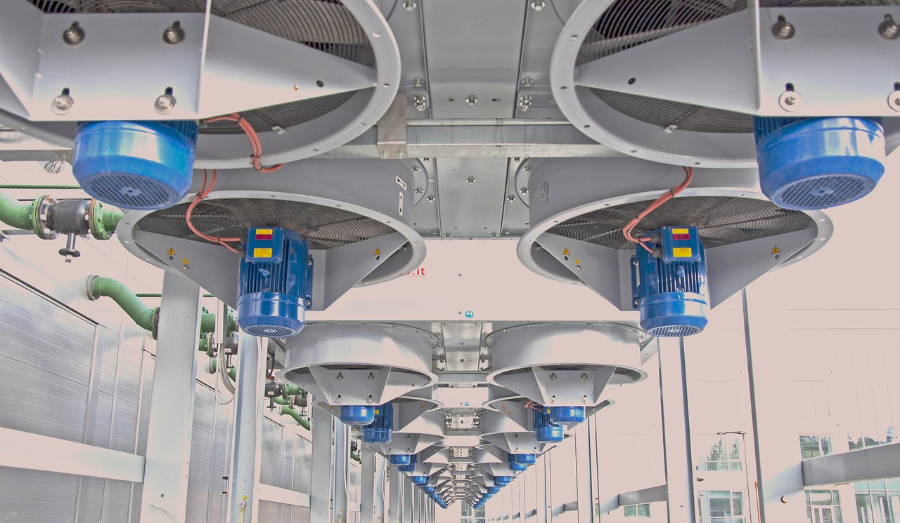

GaN 전력 소자, AI 데이터센터 핵심 소재로 급부상

AI 연산 수요가 폭발적으로 증가하면서 데이터센터 전력 소비량이 기하급수적으로 늘어나고 있다. EE Times의 최신 분석에 따르면 AI 서버 랙 한 개의 전력 소비는 2024년 평균 20~30kW에서 2026년 60~80kW 수준까지 높아졌으며, 이 추세는 앞으로도 계속될 전망이다. 이러한 전력 밀도 증가가 기존 전력변환 소재의 한계를 노출시키고 있다.
이 상황에서 주목받고 있는 소재가 GaN, 즉 질화갈륨이다. GaN은 실리콘 대비 밴드갭이 3배 이상 넓어 고전압·고주파 환경에서 스위칭 손실이 현저히 낮다. 전력변환 효율이 실리콘 MOSFET 기반 시스템 대비 약 3~5%포인트 높으며, 같은 출력을 내는 소자 크기를 절반 이하로 줄일 수 있다.
데이터센터 설계자 입장에서 GaN의 가장 큰 매력은 전력 밀도(Power Density) 향상이다. 동일한 물리적 공간에 더 많은 서버를 수용하기 위해서는 전원공급장치(PSU)의 부피를 줄이면서도 출력을 높여야 한다. GaN 기반 PSU는 이 두 가지 요구를 동시에 충족할 수 있는 현재 가장 현실적인 솔루션으로 평가받는다.
시장 규모 측면에서 GaN 전력 반도체 시장은 2025년 약 22억 달러에서 2030년 80억 달러를 넘어설 것으로 예측된다. 이 중 데이터센터용 비중이 전체의 30% 이상을 차지할 것으로 전망되며, 연평균 성장률(CAGR)은 약 28%에 달한다. AI 인프라 투자 확대가 이 성장의 핵심 원동력이다.
GaN 전력 소자 분야의 주요 플레이어는 인피니언, 텍사스인스트루먼트, 나비타스(Navitas), GaN시스템즈, 트랜스폼(Transphorm) 등이다. 특히 나비타스는 GaN IC 부문에서 빠른 성장세를 보이며 서버·데이터센터 전력 시장 침투를 가속화하고 있다. 엔비디아의 GB200 NVL72 슈퍼컴퓨팅 랙에도 GaN 기반 전원 모듈이 일부 채용된 것으로 알려졌다.
국내에서는 RFHIC, 위닉스, 지니파워 등 GaN 관련 기업들이 이 시장을 주목하고 있다. 특히 RFHIC는 GaN 에피택시 웨이퍼부터 소자까지 수직 계열화 역량을 갖추며 데이터센터 시장 진입을 위한 기술 검증에 박차를 가하고 있다. 다만 현재 국내 기업들의 데이터센터용 GaN 시장 점유율은 여전히 미미한 수준이다.
소재 공급망 관점에서 GaN 전력 소자 생산에는 고순도 질화갈륨 에피택시 웨이퍼가 필요하다. 현재 이 분야는 스미토모전기, 미쓰비시화학, 크리(미국) 등이 주도하고 있으며, 웨이퍼 생산 능력 확대가 GaN 채택 확산의 병목 중 하나로 지목되고 있다. 국내 소재 기업들의 GaN 에피 웨이퍼 국산화 연구도 활발히 진행 중이다.
기술 개발 측면에서는 실리콘 기판 위에 GaN 에피층을 성장시키는 GaN-on-Si 기술이 주목받고 있다. 기존 SiC(탄화규소) 기판 대비 웨이퍼 비용을 크게 낮출 수 있어 대중화에 유리하다. 8인치 GaN-on-Si 웨이퍼 양산 기술이 확립되면 서버용 PSU 시장에서의 GaN 채택률이 급격히 높아질 것으로 전문가들은 예측한다.
데이터센터 운영사들도 GaN 도입에 적극적이다. 마이크로소프트, 아마존 AWS, 구글 클라우드는 전력 효율 목표를 달성하기 위해 PSU 공급업체들에게 GaN 기반 설계로의 전환을 요구하는 기술 로드맵을 공개한 바 있다. 탄소중립 목표와 맞물린 에너지 효율화 압박이 GaN 채택을 더욱 가속화하는 요인이다.
정책 측면에서는 EU의 에너지 효율 규제(EuP Directive), 미국 에너지부(DOE)의 데이터센터 에너지 효율 기준 강화가 GaN 전환의 규제 근거로 작용하고 있다. 한국 정부도 2026년부터 데이터센터 에너지 효율 등급제를 도입하면서 고효율 전력 소자 수요가 증가할 것으로 보인다.
GaN 전력 반도체 시장의 성장은 국내 반도체 소재·장비 업계에 새로운 기회를 열고 있다. GaN 에피 웨이퍼 소재, 패키징 기술, 열관리 소재 등 GaN 소자 생산 밸류체인 전반에서 국내 기업들의 역할 확대 가능성이 주목된다. 특히 AI 인프라 투자 사이클이 지속되는 한 GaN 수요는 구조적으로 증가할 것이라는 전망이 지배적이다.